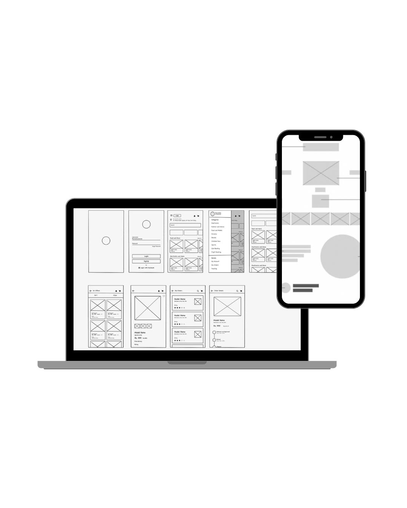
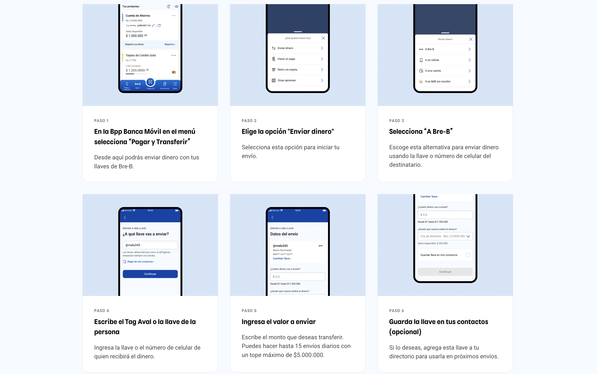

Bre-B is Colombia's immediate payment system, an initiative of the Banco de la República that allows instant 24/7 transfers between different financial entities. I designed the experience for Banco de Bogotá, ensuring intuitive flows for payment key registration and use.
The Banco de la República regulates the interoperability of immediate payments (Law 2294, art. 104) and sits with financial entities to develop the model.
Guidelines are published for the construction of sending flows and key self-management. In August, the immediate payment system brand is born: Bre-B.
The system will operate in September 2025 for person-to-person transactions. Use cases for companies are still being defined.

👥 This work was done in collaboration with the entire bank's channels team: PMs, Developers and UX Designers.
I participated as a designer on the Channels team, in charge of the Payments and Transfers section, contributing to the design and validation of the experience for Bre-B implementation.
I designed end-to-end flows for the system's key processes, such as registration, editing and deletion of payment keys. This included mapping scenarios, system states, exceptions and critical decision points to ensure a smooth and secure experience.
I built interfaces based on the bank's design system, ensuring consistency, accessibility and scalability. I worked with reusable components and visual patterns that will allow product expansion in future versions.
I planned and coordinated usability tests with real users, analyzing behaviors, friction points and improvement opportunities. From these findings, I iterated solutions to optimize the experience and increase system understanding.
I developed exhaustive documentation for development teams and stakeholders, including style guides, functional specifications, interaction mappings and recommendations for national adoption of the immediate payment model.
Achieve 60% of active users registering at least one payment key in the first 6 months.
Reduce key registration time to less than 2 minutes without assistance.
Maintain user trust with clear authentication and confirmation flows.
I actively participated in the initial phase of the project, focusing on understanding the problem, defining requirements and generating the first design proposals.
Subsequently, the final design was developed in co-creation with the design teams of the four banks of Grupo Aval, ensuring visual coherence, functional consistency and a unified experience across the entire ecosystem.
For this reason, the resulting designs are the product of collaborative and shared work among all entities in the group.

About the process: Working on a national-scale project requires exhaustive documentation and constant alignment with multiple stakeholders. Clear communication is as important as the design itself.
About users: In digital banking, trust is built step by step. Every micro-interaction counts to convey security and professionalism.
What I would improve: Involve development teams earlier to identify technical constraints that affect the final experience.

Adoption in 6 months
Average registration time
User satisfaction
Keys registered
Banco de Bogotá
Melany Cortes
Melisa Suaza
Jonathan Bernal
Juan Reyes
Laura Lozano
Mariangela Orozco